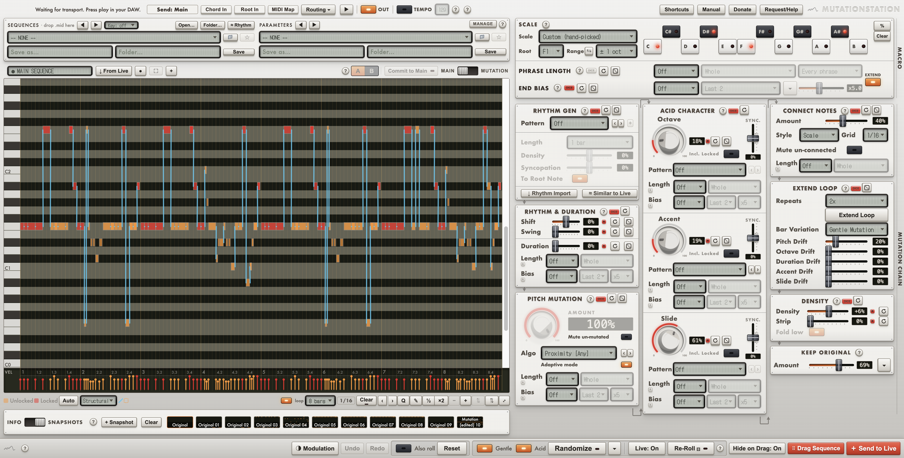
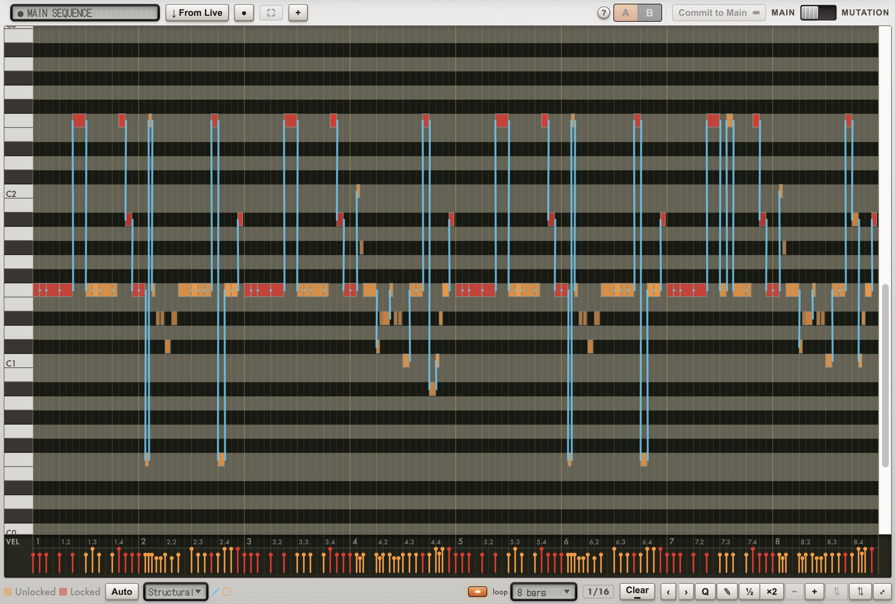
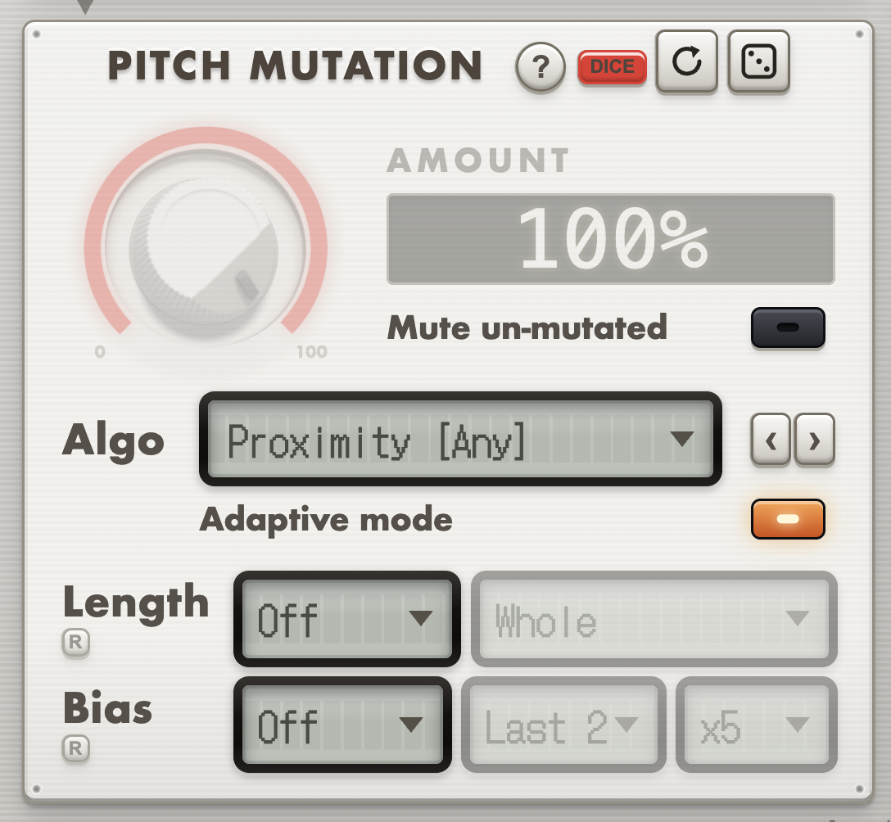
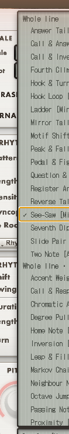
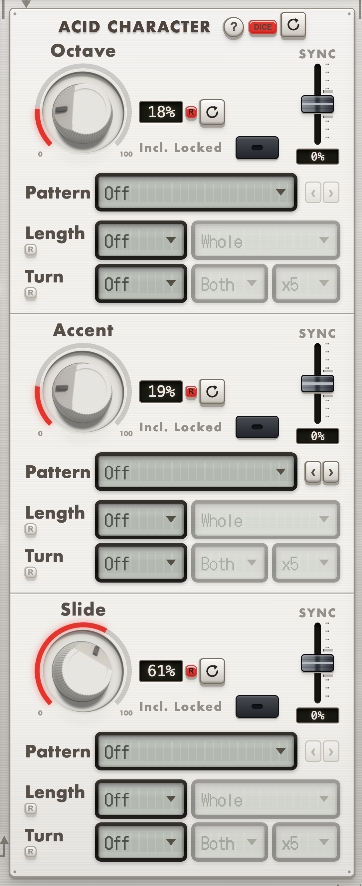

MutationStation
Lock the notes that work, re-roll/mutate the rest, and discover acid lines you would not have usually written.
Writing a bassline a note at a time is slow, and by the tenth variation they all sound like the first one. MutationStation takes a line you already have, drawn in, dropped in as a MIDI clip or pulled live from Ableton, and rolls new versions of it. You set how far the pitch moves, how the rhythm shifts, where accents and slides land. Audition takes until one is right, then drag it onto a track.

Controlled randomness
A randomiser that touches everything is a novelty. What turns it into a writing tool is being able to say which parts are already right.
MutationStation uses the lock system Elektron sequencers made famous. Click a note to pin it and every generator leaves it alone: pitch, rhythm, octave, length, accent and slide all move around it. Lock the root and the turnaround, re-roll the rest as often as you like, and the phrase keeps its shape while the detail keeps changing.
Auto-Lock picks those notes for you. Structural weighs seven signals together: recurrence, metric weight, accent, bar openers, note length, low register and isolation. When you want one signal to decide instead, rank by downbeats, offbeats, accents, long notes, low notes, recurrence, or the phrase corners that hold a bar together.
Or mutate one stretch and leave the rest alone. Drag along the bar/beat ruler above the roll to mark a range. The marked bars shade, a Range chip names them in the tool row, and from that moment every mutation device only reshapes what is inside it. Move any slider and the bars outside come through exactly as they were. Click the chip or press Esc to unmark. Membership is by where a note starts, so a note that begins before the mark and rings into it belongs to the part you did not mark.
Every roll runs on seeded dice, so the take you liked is the take you get back, and you can re-roll one panel at a time while the rest stays put.

Where the line actually comes from
34 pitch strategies, from the simple (Random, Proximity, Root/Fifth) to measured acid and techno voices like Acid Trip, Hypno Root, Seventh Anchor, Lead Line and Offbeat Anchor. Many are measured from real bass and synth loops, so they move the way basslines actually move rather than like a random-note generator. One amount decides how much of the line they are allowed to rewrite, and a scale, root and range decide where the new notes may land.


Slides and accents the way a 303 does them. Octave, Accent and Slide each get their own amount, their own step pattern and their own lock, so you can hold the accents you have and re-roll only the glides, or pin the octave jumps and let everything else move. Connect Notes fills the gaps between them with passing tones, in scale or chromatic.

Take the rhythm off a clip · including an audio clip
↓ Rhythm Import takes the timing of whatever clip Ableton is showing and lands it in the roll as a monophonic line on the root note: a rhythm nobody typed in, sitting there ready for every mutation panel to write a line onto. Click a clip in Live, press the button, and the groove of your drums is now the groove of your bassline.
It works on audio clips, not only MIDI ones. Live's scripting cannot hand an app the audio, so MutationStation reads the sample off disk, decodes it, and finds the attacks itself, by spectral flux: how much the spectrum grew from one frame to the next, which is what an attack actually is. That is why it finds a kick sitting under a held pad, where plain loudness barely moves but the spectrum does. Hit strength becomes velocity, so the accents survive the trip.
A warped clip is read through its own warp map, so the hits land on the grid you are looking at rather than where they fell in the raw file, and only the region Live actually plays is analysed. Hits snap to the roll's current grid. WAV, AIFF, MP3, FLAC and M4A. On a MIDI clip a chord counts as one hit, at the velocity of its loudest note, and deactivated notes are ignored.
What it does
- Mutate a line across pitch, rhythm, octave, note length, accent and slide. Each has its own amount, and each works independently of the others.
- A note pool you can weight. Twelve keys decide which notes mutation may reach for, and a % panel behind them decides how often each one comes up. Lean on the root, thin out the leading tone, and the same algorithm settles into the key without you removing a single note.
- 40+ rhythm patterns. Four-on-the-floor, rolling 303, tresillo, dub, house basslines, hypnotic rolls and two-bar call-and-response cells, with a density knob to thin or thicken any of them.
- Extend Loop. Double or quadruple the loop and let each extra bar drift, with pitch, octave, duration, accent and slide each on their own amount. Hold the riff and vary only the groove, or the reverse.
- Turnaround Emphasis. Every one, two or four bars, the last notes of the group get boosted odds, so the phrase announces its own repeat instead of looping flat. You choose the multiplier, which of the last two notes it lands on, and which amounts it is allowed to boost.
- Keep Original. The last link in the chain: after every other panel has had its say, each unlocked note gets a chance to snap back to how it started. A way to let some of the take survive heavy mutation without locking anything, and you tick which aspects may revert.
- A real piano roll. Draw, drag, resize, set velocity, with a History strip that keeps every take you generate so you can rewind to a direction you liked, plus + Snapshot to bank one you want to come back to, settings and all.
- Presets and Find Similar Rhythm. Save sequences and knob recipes, and scan your saved sequences for ones that groove like the one on screen.
- 303 factory sequences ship with the app, kept separate from your own library so an update can revise them and a reset cannot lose them.
- Modulation lanes for Live. Draw up to eight per-step lanes, each driving one parameter on the selected device as smooth 14-bit automation. Stream them live, or Send to Live to build a new Session clip carrying both the notes and the modulation as clip envelopes, or Replace clip to overwrite the one you have selected.
- Play and record straight in, from a MIDI keyboard or a DAW track: arm Record and notes land on the grid as you play, Overdub decides whether a new pass replaces or builds on the last one, and Recapture rescues the loop you just played without ever having armed anything. Chord In and Root In read the same port to transpose the pool from a played chord or a played note.
- Follow your DAW's clock, or run on your own. Pick the port your DAW sends MIDI clock on and the app follows its tempo and its relocations; pick Internal and it plays by itself. Dragged-out clips carry a tempo only if you ask them to, so a clip dropped into Live adopts the project's tempo instead of yanking it.
- Hints and a manual in the window. Every panel explains itself where you are standing, and the full manual opens inside the app, so there is no PDF to go hunting for.
Why standalone
MutationStation runs as its own app, not a plugin, and reaches your DAW the way a hardware groovebox would: as a MIDI device you record from or drag takes out of, the same route any outboard sequencer uses. That separation is deliberate. If your DAW crashes, MutationStation and every take in its History strip are untouched, and if MutationStation hits a snag, your session keeps playing. One process holding both jobs would lose you both at once.
Requirements
macOS on Apple Silicon (M1 or later), and any DAW that takes MIDI. Built and tested with Ableton Live.
MutationStation is ad-hoc signed, so the first time you open it macOS Gatekeeper will block it: right-click the app → Open → Open again. Once only.
Version 1.0.0
Getting it into your DAW
The app appears to your Mac as a MIDI device called
MutationStation. Make a track listen to it, turn
on input monitoring, and play. Or skip all of that and
drag a take out onto a track as a .mid
clip, which needs no setup at all.
Two golden rules if you hear nothing
The track must be record-armed or input-monitoring, because most DAWs are silent otherwise, and its input must be set to MutationStation or All Inputs.
Per-DAW steps for Live, Logic, Bitwig, FL, Reaper, Studio One and GarageBand are in the manual, which is bundled with the app.
Particular integration with Live
A control script ships alongside the app. Install it and you get ↓ From Live, which pulls the clip you are looking at straight into the sequencer, ↓ Rhythm Import, which takes just the rhythm of whatever clip Live is showing, plus spacebar transport, so the app's transport key starts and stops Live itself.
Going the other way, Send to Live and Replace clip write a Session clip back out, with notes and, if you have drawn any, modulation lanes as clip automation. A plain MIDI drag remains the notes-only route for any DAW.
Other DAWs get the same transport control over MMC on the same port, if they are set to receive it, plus a DAW-neutral capture that anchors to the first note it hears.